Hiranai
Hiranai · Aomori
Hiranai
Highlighted on the Aomori map.
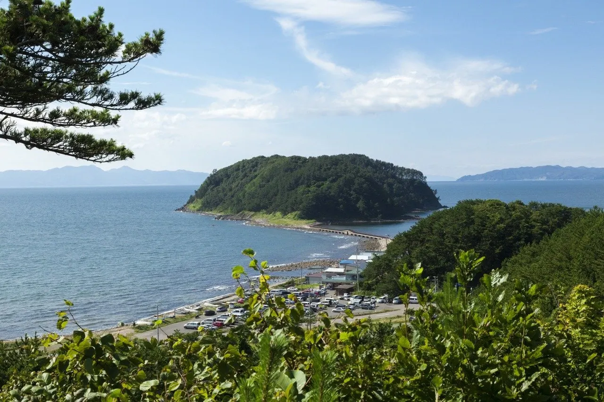
Stay
グランメモリー夏泊
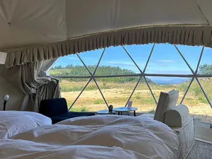
Guranmemorii Natsu Haku
Dining
シーグランス
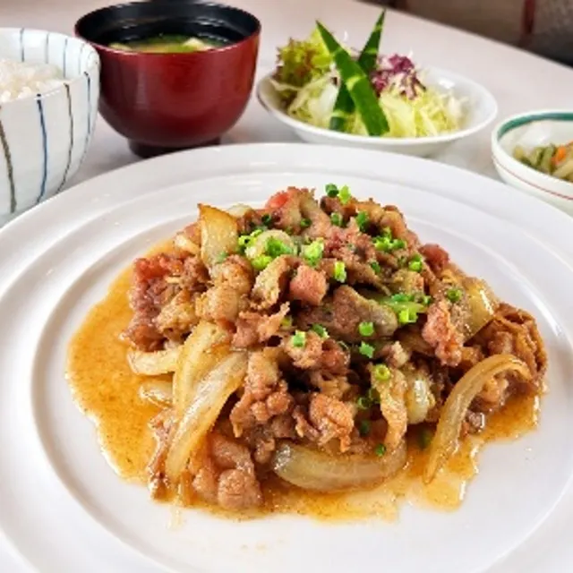
Shiiguransu
林泉
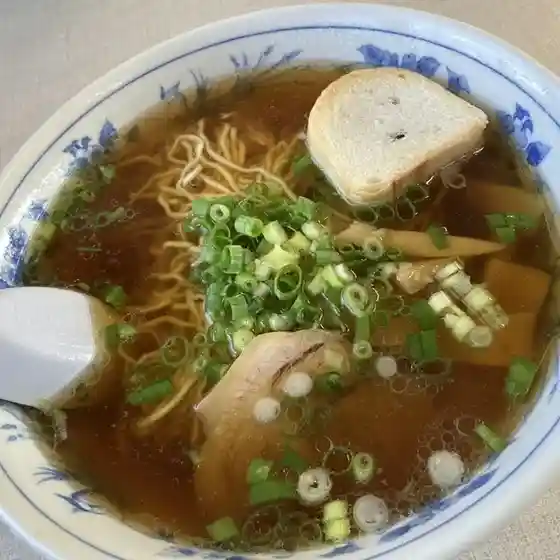
Rinsen
LAWSON 平内藤沢店
Lawson Hiranai Fujisawa Mise
割烹 さん平
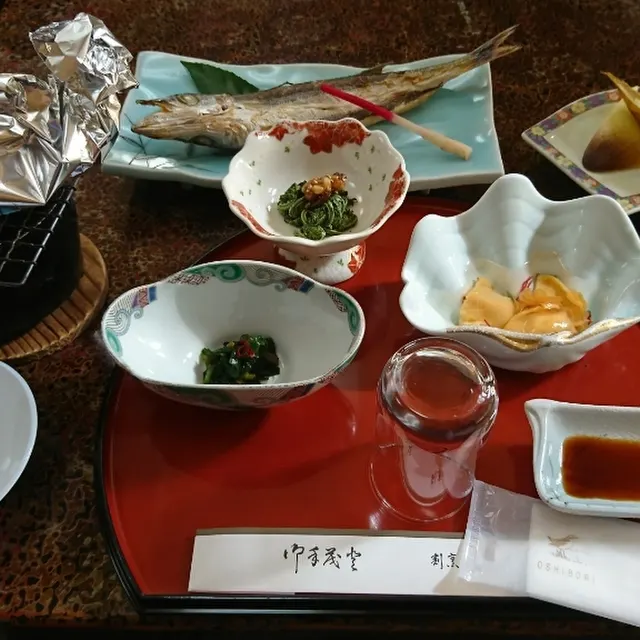
Kappou San Taira
寿司隆
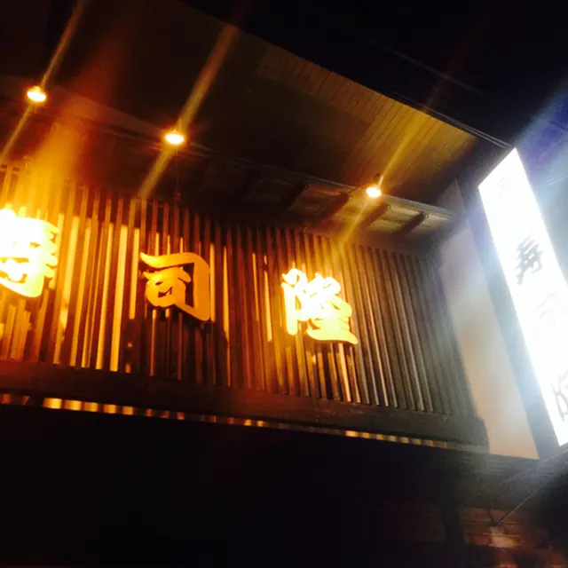
Sushi Takashi
ラ－メンショップ 平内店
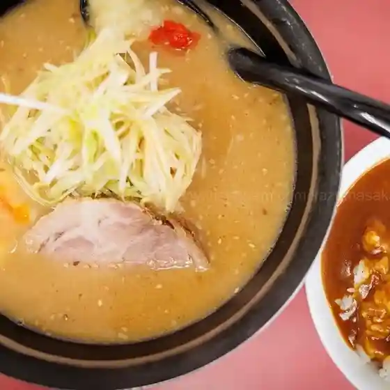
Ra - Menshoppu Hiranai Mise
龍松閣
Ryuu Matsu Kaku
キッチン 天ぷく
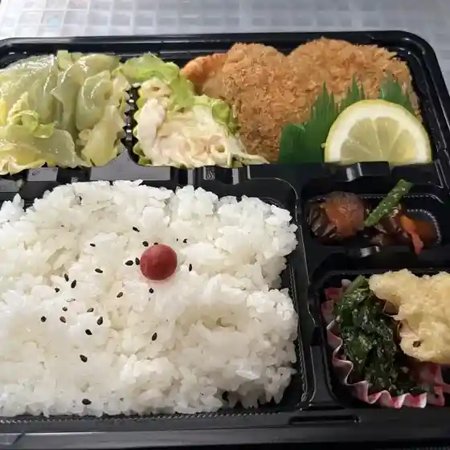
Kitchin Ten Puku
イチコ
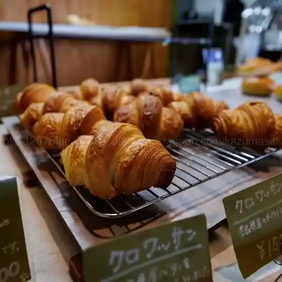
Ichiko
鮨金
Sushi Kin
民宿 佐々木
Minshuku Sasaki
蔵
Kura
田中食堂
Tanaka Shokudou
有限会社アラコウ水産
Yuugengaisha Arakou Suisan
うどん屋 しろ
Udon Ya Shiro
ファミリーマート 平内小湊店
Famiriimaato Hiranai Kominato Mise
喰道楽 あたご
Shoku Douraku Atago
貴の華
Takashi No Hana
ポニー
Ponii
お食事何処かどや
O Shokuji Doko Kadoya
じゃがいも
Jagaimo
森と川と海ほたて広場
Mori To Kawa To Umi Hotate Hiroba
ほたて広場
Hotate Hiroba
お菓子工房 プティ ボヌール
O Kashi Koubou Putei Bonuuru
Sights
Oshima Island (Natsudomari Peninsula)
Rocky 20-hectare island at the tip of the Natsudomari Peninsula, reached by a footbridge, with a lighthouse.
Hotate Hiroba
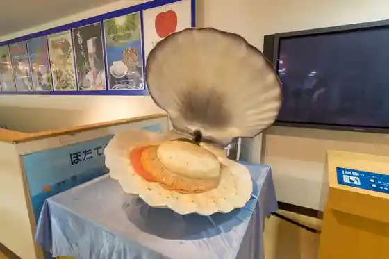
Scallop-themed market and restaurant in Hiranai, Japan's top town for farmed scallops.
Asadokoro Coast (Kominato Swan Site)
National special natural monument where about 700-800 swans winter from mid-October to late March.
Yogoshiyama Forest Park
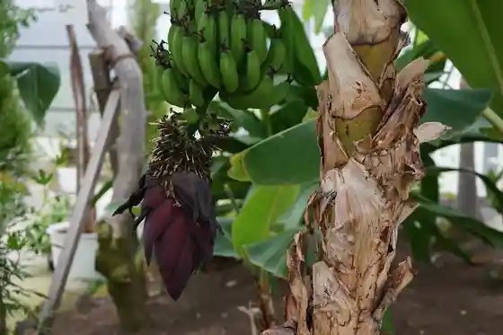
Leisure park with camping, a ski slope, hot spring and a large greenhouse of over 3,000 succulent species.
Hiranai Ikiiki Kenkokan Yogoshiyama Onsen
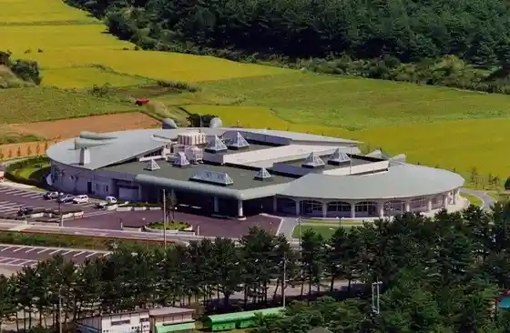
Day-use hot spring near Yogoshiyama Forest Park with jet baths, cascades and herbal baths.
Swan Festival 2026
Winter festival at Asadokoro Coast with pork soup, bread-baking for kids and local stalls.
Tsubakiyama Coast
Hillside of over 10,000 wild camellias blooming red from late April, the northern limit of their range.
Yogoshiyama Cabin Houses
Six Finnish log cabins in Yogoshiyama Forest Park, each sleeping up to eight, open year-round.
Yogoshiyama Auto Campground
80-site campground in Yogoshiyama Forest Park.
Yogoshiyama Ski Area
Local ski area with views of Mutsu Bay; the lift reaches the 180 m summit in about 6 minutes.